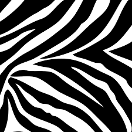
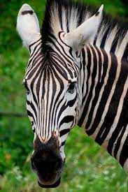

The lower the better
When taking pictures of wildlife it is important to be as close to the ground as possible. An eye to eye angle will give the image a much more dramatic impact and will give the right perspective, helping to show the dimension of the animal. The other big advantage of shooting at a lower angle is that the background...
Southern Africa Wildlife Guide
The Swahili word for “zebra” is “pundamilia,” which translates literally to “striped donkey.” The function of a zebra’s stripes is still up for debate, though it is widely thought that the stripes act as a way of confusing predators, either by camouflaging ...